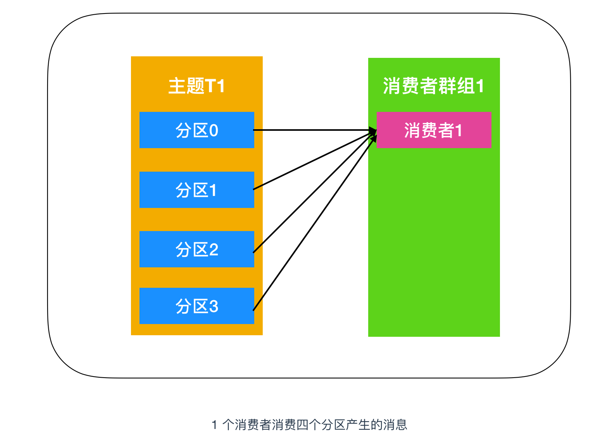
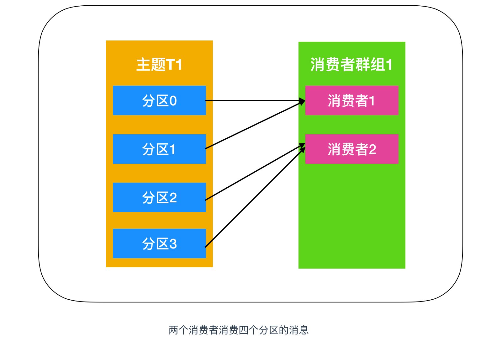
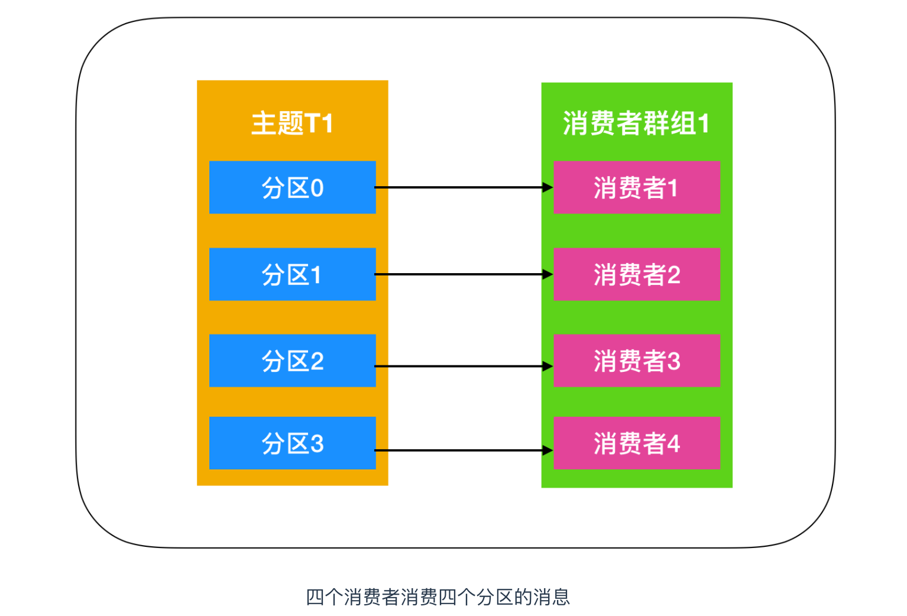
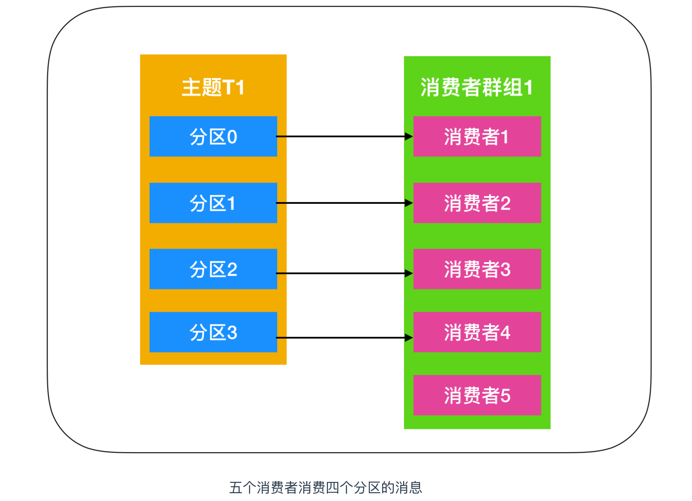
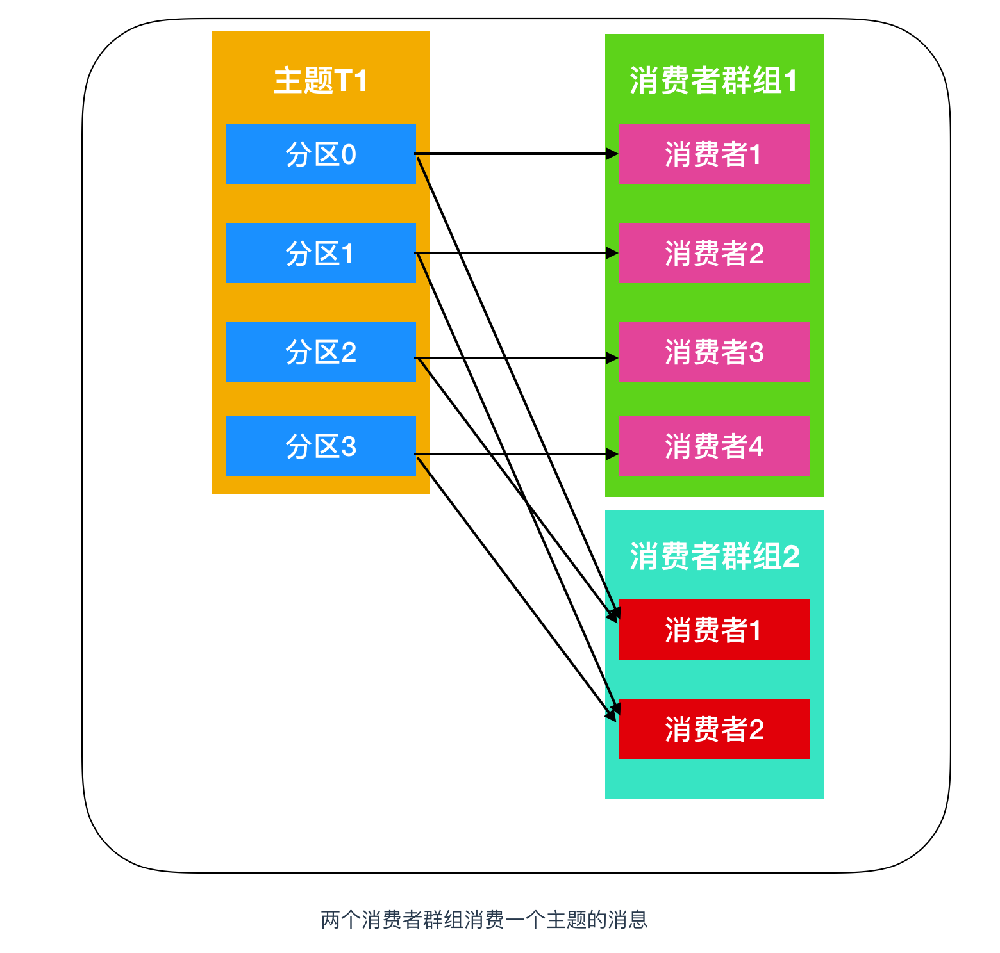
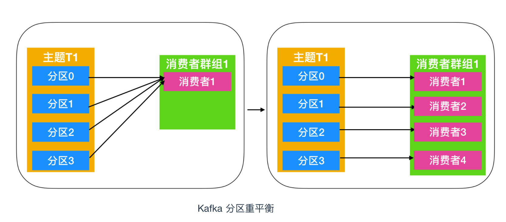
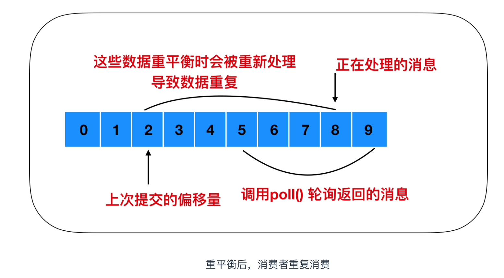
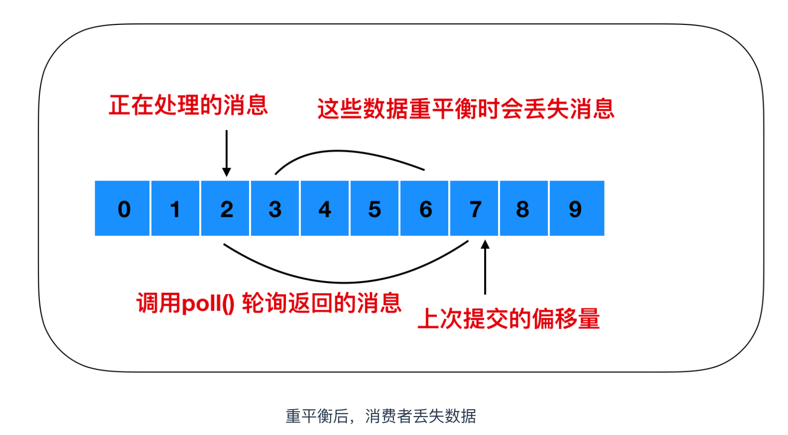

4 Kafka Consumer
应用程序使用 KafkaConsumer 从 Kafka 中订阅主题并接收来自这些主题的消息，然后再把他们保存起来。
应用程序首先需要创建一个 KafkaConsumer 对象，订阅主题并开始接受消息，验证消息并保存结果。
一段时间后，生产者往主题写入的速度超过了应用程序验证数据的速度，这时候该如何处理？
如果只使用单个消费者的话，应用程序会跟不上消息生成的速度，就像多个生产者像相同的主题写入消息一样，这时候就需要多个消费者共同参与消费主题中的消息，对消息进行分流处理。
Kafka 消费者从属于消费者群组。
一个群组中的消费者订阅的都是相同的主题，每个消费者接收主题一部分分区的消息。
下面是一个 Kafka 分区消费示意图

上图中的主题 T1 有四个分区，分别是分区0、分区1、分区2、分区3，我们创建一个消费者群组1，消费者群组中只有一个消费者，它订阅主题T1，接收到 T1 中的全部消息。
由于一个消费者处理四个生产者发送到分区的消息，压力有些大，需要帮手来帮忙分担任务，于是就演变为下图

这样一来，消费者的消费能力就大大提高了，但是在某些环境下比如用户产生消息特别多的时候，生产者产生的消息仍旧让消费者吃不消，那就继续增加消费者。

如上图所示，每个分区所产生的消息能够被每个消费者群组中的消费者消费，如果向消费者群组中增加更多的消费者，那么多余的消费者将会闲置，如下图所示

向群组中增加消费者是横向伸缩消费能力的主要方式。
总而言之，我们可以通过增加消费组的消费者来进行水平扩展提升消费能力。
这也是为什么建议创建主题时使用比较多的分区数，这样可以在消费负载高的情况下增加消费者来提升性能。
另外，消费者的数量不应该比分区数多，因为多出来的消费者是空闲的，没有任何帮助
Kafka 一个很重要的特性就是，只需写入一次消息，可以支持任意多的应用读取这个消息。
换句话说，每个应用都可以读到全量的消息。为了使得每个应用都能读到全量消息，应用需要有不同的消费组。对于上面的例子，假如我们新增了一个新的消费组 G2，而这个消费组有两个消费者，那么就演变为下图这样

在这个场景中，消费组 G1 和消费组 G2 都能收到 T1 主题的全量消息，在逻辑意义上来说它们属于不同的应用。
总结起来就是如果应用需要读取全量消息，那么请为该应用设置一个消费组；如果该应用消费能力不足，那么可以考虑在这个消费组里增加消费者。
2 消费者组和分区重平衡
2-1 消费者组是什么
消费者组（Consumer Group）是由一个或多个消费者实例（Consumer Instance）组成的群组，具有可扩展性和可容错性的一种机制。
消费者组内的消费者共享一个消费者组ID，这个ID 也叫做 Group ID，组内的消费者共同对一个主题进行订阅和消费，同一个组中的消费者只能消费一个分区的消息，多余的消费者会闲置，派不上用场。
我们在上面提到了两种消费方式
- 一个消费者群组消费一个主题中的消息，这种消费模式又称为点对点的消费方式，点对点的消费方式又被称为消息队列
- 一个主题中的消息被多个消费者群组共同消费，这种消费模式又称为发布-订阅模式
2-2 消费者重平衡
我们从上面的消费者演变图中可以知道这么一个过程：
最初是一个消费者订阅一个主题并消费其全部分区的消息，后来有一个消费者加入群组，随后又有更多的消费者加入群组，而新加入的消费者实例分摊了最初消费者的部分消息，
这种把分区的所有权通过一个消费者转到其他消费者的行为称为重平衡，英文名也叫做 Rebalance 。
如下图所示

重平衡非常重要，它为消费者群组带来了高可用性 和 伸缩性，我们可以放心的添加消费者或移除消费者，不过在正常情况下我们并不希望发生这样的行为。
在重平衡期间，消费者无法读取消息，造成整个消费者组在重平衡的期间都不可用。
另外，当分区被重新分配给另一个消费者时，消息当前的读取状态会丢失，它有可能还需要去刷新缓存，在它重新恢复状态之前会拖慢应用程序。
消费者通过向组织协调者（Kafka Broker）发送心跳来维护自己是消费者组的一员并确认其拥有的分区。
对于不同不的消费群体来说，其组织协调者可以是不同的。只要消费者定期发送心跳，就会认为消费者是存活的并处理其分区中的消息。当消费者检索记录或者提交它所消费的记录时就会发送心跳。
如果过了一段时间 Kafka 停止发送心跳了，会话（Session）就会过期，组织协调者就会认为这个 Consumer 已经死亡，就会触发一次重平衡。如果消费者宕机并且停止发送消息，组织协调者会等待几秒钟，确认它死亡了才会触发重平衡。在这段时间里，死亡的消费者将不处理任何消息。在清理消费者时，消费者将通知协调者它要离开群组，组织协调者会触发一次重平衡，尽量降低处理停顿。
重平衡是一把双刃剑，它为消费者群组带来高可用性和伸缩性的同时，还有有一些明显的缺点(bug)，而这些 bug 到现在社区还无法修改。
重平衡是一把双刃剑，它为消费者群组带来高可用性和伸缩性的同时，还有有一些明显的缺点(bug)，而这些 bug 到现在社区还无法修改。
重平衡的过程对消费者组有极大的影响。因为每次重平衡过程中都会导致万物静止，参考 JVM 中的垃圾回收机制，也就是 Stop The World ，STW，
也就是说，在重平衡期间，消费者组中的消费者实例都会停止消费，等待重平衡的完成。而且重平衡这个过程很慢......
创建消费者
在读取消息之前，需要先创建一个 KafkaConsumer 对象。
创建 KafkaConsumer 对象与创建 KafkaProducer 对象十分相似 --- 把需要传递给消费者的属性放在 properties 对象中，后面我们会着重讨论 Kafka 的一些配置，这里我们先简单的创建一下，使用3个属性就足矣，分别是 bootstrap.server，key.deserializer，value.deserializer。
还有一个属性是 group.id 这个属性不是必须的，它指定了 KafkaConsumer 是属于哪个消费者群组。创建不属于任何一个群组的消费者也是可以的
Properties properties = new Properties();
properties.put("bootstrap.server","192.168.1.9:9092"); properties.put("key.serializer","org.apache.kafka.common.serialization.StringSerializer"); properties.put("value.serializer","org.apache.kafka.common.serialization.StringSerializer");
KafkaConsumer<String,String> consumer = new KafkaConsumer<>(properties);
主题订阅
创建好消费者之后，下一步就开始订阅主题了。subscribe() 方法接受一个主题列表作为参数，使用起来比较简单
consumer.subscribe(Collections.singletonList("customerTopic"));
为了简单我们只订阅了一个主题 customerTopic，参数传入的是一个正则表达式，正则表达式可以匹配多个主题，如果有人创建了新的主题，并且主题的名字与正则表达式相匹配，那么会立即触发一次重平衡，消费者就可以读取新的主题。
要订阅所有与 test 相关的主题，可以这样做
consumer.subscribe("test.*");
轮询
Kafka 是支持订阅/发布模式的，生产者发送数据给 Kafka Broker，那么消费者是如何知道生产者发送了数据呢？其实生产者产生的数据消费者是不知道的，KafkaConsumer 采用轮询的方式定期去 Kafka Broker 中进行数据的检索，如果有数据就用来消费，如果没有就再继续轮询等待，下面是轮询等待的具体实现
try {
while (true) {
ConsumerRecords<String, String> records = consumer.poll(Duration.ofSeconds(100));
for (ConsumerRecord<String, String> record : records) {
int updateCount = 1;
if (map.containsKey(record.value())) {
updateCount = (int) map.get(record.value() + 1);
}
map.put(record.value(), updateCount);
}
}
}finally {
consumer.close();
}
- 这是一个无限循环。消费者实际上是一个长期运行的应用程序，它通过轮询的方式向 Kafka 请求数据。
- 第三行代码非常重要，Kafka 必须定期循环请求数据，否则就会认为该 Consumer 已经挂了，会触发重平衡，它的分区会移交给群组中的其它消费者。传给
poll()方法的是一个超市时间，用java.time.Duration类来表示，如果该参数被设置为 0 ，poll()方法会立刻返回，否则就会在指定的毫秒数内一直等待 broker 返回数据。 poll()方法会返回一个记录列表。每条记录都包含了记录所属主题的信息，记录所在分区的信息、记录在分区中的偏移量，以及记录的键值对。我们一般会遍历这个列表，逐条处理每条记录。- 在退出应用程序之前使用
close()方法关闭消费者。网络连接和 socket 也会随之关闭，并立即触发一次重平衡，而不是等待群组协调器发现它不再发送心跳并认定它已经死亡。
消费者配置
到目前为止，我们学习了如何使用消费者 API，不过只介绍了几个最基本的属性，Kafka 文档列出了所有与消费者相关的配置说明。大部分参数都有合理的默认值，一般不需要修改它们，下面我们就来介绍一下这些参数。
- fetch.min.bytes
该属性指定了消费者从服务器获取记录的最小字节数。broker 在收到消费者的数据请求时，如果可用的数据量小于 fetch.min.bytes 指定的大小，那么它会等到有足够的可用数据时才把它返回给消费者。这样可以降低消费者和 broker 的工作负载，因为它们在主题使用频率不是很高的时候就不用来回处理消息。如果没有很多可用数据，但消费者的 CPU 使用率很高，那么就需要把该属性的值设得比默认值大。如果消费者的数量比较多，把该属性的值调大可以降低 broker 的工作负载。
- fetch.max.wait.ms
我们通过上面的 fetch.min.bytes 告诉 Kafka，等到有足够的数据时才会把它返回给消费者。
而 fetch.max.wait.ms 则用于指定 broker 的等待时间，默认是 500 毫秒。如果没有足够的数据流入 kafka 的话，消费者获取的最小数据量要求就得不到满足，最终导致 500 毫秒的延迟。如果要降低潜在的延迟，就可以把参数值设置的小一些。如果 fetch.max.wait.ms 被设置为 100 毫秒的延迟，而 fetch.min.bytes 的值设置为 1MB，那么 Kafka 在收到消费者请求后，要么返回 1MB 的数据，要么在 100 ms 后返回所有可用的数据。就看哪个条件首先被满足。
- max.partition.fetch.bytes
该属性指定了服务器从每个分区里返回给消费者的最大字节数。它的默认值时 1MB，也就是说，KafkaConsumer.poll()方法从每个分区里返回的记录最多不超过 max.partition.fetch.bytes 指定的字节。如果一个主题有20个分区和5个消费者，那么每个消费者需要至少4 MB的可用内存来接收记录。在为消费者分配内存时，可以给它们多分配一些，因为如果群组里有消费者发生崩溃，剩下的消费者需要处理更多的分区。
max.partition.fetch.bytes 的值必须比 broker 能够接收的最大消息的字节数(通过 max.message.size 属性配置大)，否则消费者可能无法读取这些消息，导致消费者一直挂起重试。 在设置该属性时，另外一个考量的因素是消费者处理数据的时间。消费者需要频繁的调用 poll() 方法来避免会话过期和发生分区再平衡，如果单次调用poll()返回的数据太多，消费者需要更多的时间进行处理，可能无法及时进行下一个轮询来避免会话过期。如果出现这种情况，可以把 max.partition.fetch.bytes 值改小，或者延长会话过期时间。
- session.timeout.ms
这个属性指定了消费者在被认为死亡之前可以与服务器断开连接的时间，默认是 3s。如果消费者没有在 session.timeout.ms 指定的时间内发送心跳给群组协调器，就会被认定为死亡，协调器就会触发重平衡。
把它的分区分配给消费者群组中的其它消费者，此属性与 heartbeat.interval.ms 紧密相关。heartbeat.interval.ms 指定了 poll() 方法向群组协调器发送心跳的频率，session.timeout.ms 则指定了消费者可以多久不发送心跳。所以，这两个属性一般需要同时修改，heartbeat.interval.ms 必须比 session.timeout.ms 小，一般是 session.timeout.ms 的三分之一。如果 session.timeout.ms 是 3s，那么 heartbeat.interval.ms 应该是 1s。把 session.timeout.ms 值设置的比默认值小，可以更快地检测和恢复崩愤的节点，不过长时间的轮询或垃圾收集可能导致非预期的重平衡。把该属性的值设置得大一些，可以减少意外的重平衡，不过检测节点崩溃需要更长的时间。
- auto.offset.reset
该属性指定了消费者在读取一个没有偏移量的分区或者偏移量无效的情况下的该如何处理。它的默认值是 latest，意思指的是，在偏移量无效的情况下，消费者将从最新的记录开始读取数据。另一个值是 earliest，意思指的是在偏移量无效的情况下，消费者将从起始位置处开始读取分区的记录。
- enable.auto.commit
我们稍后将介绍几种不同的提交偏移量的方式。该属性指定了消费者是否自动提交偏移量，默认值是 true，为了尽量避免出现重复数据和数据丢失，可以把它设置为 false，由自己控制何时提交偏移量。如果把它设置为 true，还可以通过 auto.commit.interval.ms 属性来控制提交的频率
- partition.assignment.strategy
我们知道，分区会分配给群组中的消费者。PartitionAssignor 会根据给定的消费者和主题，决定哪些分区应该被分配给哪个消费者，Kafka 有两个默认的分配策略Range 和 RoundRobin
- client.id
该属性可以是任意字符串，broker 用他来标识从客户端发送过来的消息，通常被用在日志、度量指标和配额中
- max.poll.records
该属性用于控制单次调用 call() 方法能够返回的记录数量，可以帮你控制在轮询中需要处理的数据量。
- receive.buffer.bytes 和 send.buffer.bytes
socket 在读写数据时用到的 TCP 缓冲区也可以设置大小。如果它们被设置为 -1，就使用操作系统默认值。如果生产者或消费者与 broker 处于不同的数据中心内，可以适当增大这些值，因为跨数据中心的网络一般都有比较高的延迟和比较低的带宽。
提交和偏移量的概念
特殊偏移
我们上面提到，消费者在每次调用poll() 方法进行定时轮询的时候，会返回由生产者写入 Kafka 但是还没有被消费者消费的记录，因此我们可以追踪到哪些记录是被群组里的哪个消费者读取的。消费者可以使用 Kafka 来追踪消息在分区中的位置（偏移量）
消费者会向一个叫做 _consumer_offset 的特殊主题中发送消息，这个主题会保存每次所发送消息中的分区偏移量，这个主题的主要作用就是消费者触发重平衡后记录偏移使用的，消费者每次向这个主题发送消息，正常情况下不触发重平衡，这个主题是不起作用的，当触发重平衡后，消费者停止工作，每个消费者可能会分到对应的分区，这个主题就是让消费者能够继续处理消息所设置的。
如果提交的偏移量小于客户端最后一次处理的偏移量，那么位于两个偏移量之间的消息就会被重复处理

如果提交的偏移量大于最后一次消费时的偏移量，那么处于两个偏移量中间的消息将会丢失

既然_consumer_offset如此重要，那么它的提交方式是怎样的呢？下面我们就来说一下####提交方式
KafkaConsumer API 提供了多种方式来提交偏移量
自动提交
最简单的方式就是让消费者自动提交偏移量。如果 enable.auto.commit 被设置为true，那么每过 5s，消费者会自动把从 poll() 方法轮询到的最大偏移量提交上去。提交时间间隔由 auto.commit.interval.ms 控制，默认是 5s。
与消费者里的其他东西一样，自动提交也是在轮询中进行的。消费者在每次轮询中会检查是否提交该偏移量了，如果是，那么就会提交从上一次轮询中返回的偏移量。
提交当前偏移量
把 auto.commit.offset 设置为 false，可以让应用程序决定何时提交偏移量。使用 commitSync()提交偏移量。这个 API 会提交由 poll() 方法返回的最新偏移量，提交成功后马上返回，如果提交失败就抛出异常。
commitSync() 将会提交由 poll() 返回的最新偏移量，如果处理完所有记录后要确保调用了 commitSync()，否则还是会有丢失消息的风险，如果发生了在均衡，从最近一批消息到发生在均衡之间的所有消息都将被重复处理。
异步提交
异步提交 commitAsync() 与同步提交 commitSync() 最大的区别在于异步提交不会进行重试，同步提交会一致进行重试。
同步和异步组合提交
一般情况下，针对偶尔出现的提交失败，不进行重试不会有太大的问题，因为如果提交失败是因为临时问题导致的，那么后续的提交总会有成功的。但是如果在关闭消费者或再均衡前的最后一次提交，就要确保提交成功。 因此，在消费者关闭之前一般会组合使用commitAsync和commitSync提交偏移量。
提交特定的偏移量
消费者API允许调用 commitSync() 和 commitAsync() 方法时传入希望提交的 partition 和 offset 的 map，即提交特定的偏移量。